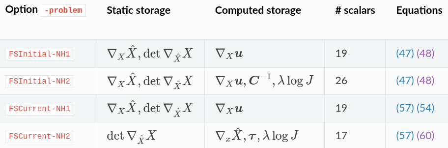

2023-11-10 Ratel Hands-on#
Last time#
Intro to solid mechanics, Ratel
Singularities and \(hp\) adaptivity
Cost of sparse matrices
GPU performance with Ratel and context
Today#
Solver diagnostics
Reading profiles
Amortizing costs
using Plots
default(linewidth=3)
using LinearAlgebra
using SparseArrays
Running on Alpine#
$ ssh login.rc.colorado.edu
rc$ module load slurm/alpine
rc$ acompile
acompile$ . /projects/jeka2967/activate.bash
$ git clone \
https://gitlab.com/micromorph/ratel
$ cd ratel/examples
$ mpiexec -n 1 ratel-quasistatic \
-options_file FILE.yml
Running in Docker#
Clone the Ratel repository and cd into it
host$ docker run -it --rm -v $(pwd):/work registry.gitlab.com/micromorph/ratel
$ mpiexec -n 2 ratel-quasistatic -options_file ex02-quasistatic-elasticity-multi-material.yml
Suggested test problem#
$ mpiexec -n 6 ratel-quasistatic -options_file ex02-quasistatic-elasticity-schwarz-pendulum.yml
Quasi-Newton methods (BFGS)#
BFGS is a method that does not require a linear solve.
It starts with an operation \(J_0^{-1}\), which is meant to be an approximation of the inverse Jacobian (like a preconditioner).
Each iteration creates a symmetric rank-2 update,
\[J_{k+1}^{-1} = \left(I - \frac{s_k z_k^T}{s_k^T z_k}\right) J_k^{-1} \left(I - \frac{s_k z_k^T}{s_k^T z_k}\right) + \frac{s_k s_k^T}{s_k^T z_k}\]BFGS is equivalent to conjugate gradients for a linear problem.
-snes_type qn -snes_qn_scale_type jacobianThis uses an iterative solve for \(J_0\)
Add
-ksp_type preonly(skip the iterative solve)
Newton#
Good diagnostics because we can tighten linear solve independent from nonlinear.
-ksp_converged_reason -ksp_view_singularvaluesAre we “over-solving”; see
-snes_ksp_ewto automatically adjust during convergence
Quasi-Newton#
Fewer Jacobian assemblies and preconditioner setups
Maybe fewer linear solve iterations (automatically avoids over-solving)
Solids: efficient matrix-free Jacobians#
cf. Davydov et al. (2020)#
Suggestions (use -ts_view and -log_view)#
Change from
initialtocurrentconfiguration
$ git grep model: examples/*.yml
Try assembling and using AMG directly (instead of p-MG first):
-multigrid amg_onlyAnd try a direct solve:
-pc_type choleskyTry using one-level domain decomposition
-pc_type bjacobiorasmWhat is the marginal cost of p-refinement (
-order) versus h-refinement (seetpsrefineandlayers)?Relative benefit of quasi-Newton?
How does thickness affect solve cost? What about Poisson ratio
nu? (Edit the input file or override from command line.)
Visualization (if you have Paraview)
-ts_monitor_solution cgns:sol.cgns(just stores displacement at each time step)-ts_monitor_diagnostic_quantities cgns:diag.cgns(lots of diagnostic fields)-view_diagnostic_quantities vtk:diagnostic.vtu(only at the final time)For CGNS: load
Point Arrays(lower left sidebar) andApplyafter opening file.“Warp by Vector” (Control-Space to search by name, or use
Filters->Commonmenu)von Mises stress is an indicator for plastic yield (elasticity no longer valid)